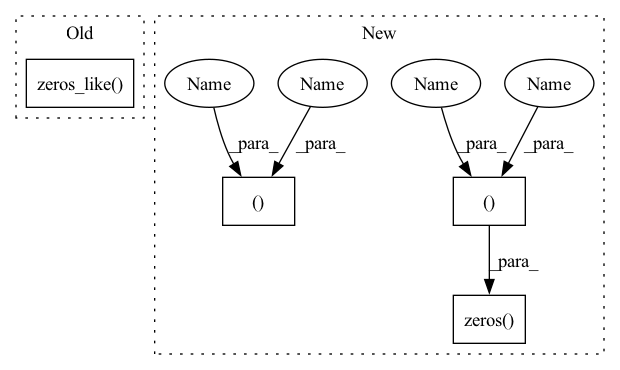

Pattern ID :19888
Before Change
ys,xs = ctx.stride
rcout = cout//ctx.groups
dx, dw = np.zeros_like( x) , np.zeros_like(w)
gdx = dx.reshape(bs,ctx.groups,cin,x.shape[2],x.shape[3])
gdw = dw.reshape(ctx.groups,rcout, cin, H, W)After Change
tx, tw, x_shape = ctx.saved_tensors
_,rcout,cin,H,W = tw.shape
ys,xs = ctx.stride
OY ,OX = x_shape[2:4]
ggg = grad_output.reshape(bs,ctx.groups,rcout,oy,ox)
gdw = np.einsum("igkYX,igjYXyx -> gkjyx",ggg,tx)
//needs to be optimized
gdx = np.zeros( (bs,ctx.groups,cin,OY,OX ), dtype=tx.dtype)
for Y in range(grad_output.shape[2]):
for X in range(grad_output.shape[3]):
iY,iX = Y*ys, X*xs
gdx[:,:,: , iY:iY+H, iX:iX+W] += np.einsum("igk,gkjyx->igjyx",ggg[:,:,:,Y,X], tw)In pattern: SUPERPATTERN
Frequency: 3
Non-data size: 4
Instances Fragment ID: 64622938
Project Name: geohot/tinygrad
Commit Name: a8521435726639f1aae19152c6bb6e2bf47d4f9e
Time: 2020-10-31
Author: geohot@gmail.com
File Name: tinygrad/ops.py
M Class Name: Conv2D
N Class Name: Conv2D
M Method Name: backward(2)
N Method Name: backward(2)
M Parent Class: Function
N Parent Class: Function
M File Name: tinygrad/ops.py
N File Name: tinygrad/ops.py
M Start Line: 180
M End Line: 207
N Start Line: 178
N End Line: 193
Before Change
self.emb = self.dropout(self.emb)
count = np.arange(x.shape[0]) + 1
self.c_t = torch.zeros_like( self.emb) // shape=(seq_len, batch_size, day_dim)
for i, att_timesteps in enumerate(count):
// 按时间步迭代，计算每个时间步的经attention的gru输出
self.c_t[i] = self.attentionStep(first_h_a, first_h_b, att_timesteps)After Change
return out
def forward(self, x):
batch_size, time_steps, _ = x.size()
x = self.proj(x)
x = self.dropout(x)
out = torch.zeros( (batch_size, time_steps, self.hidden_dim ))
for cur_time in range(time_steps):
cur_x = x[:, : cur_time + 1, :]
out[:, cur_time, :] = self.retain_encoder(cur_x) Fragment ID: 64622939
Project Name: yhzhu99/covid-ehr-benchmarks
Commit Name: b3d4ba85ad8e8cfeb3e45e07e5fadfa3fd4a25fa
Time: 2022-06-25
Author: yhzhu99@gmail.com
File Name: app/models/backbones/retain.py
M Class Name: RETAIN
N Class Name: RETAIN
M Method Name: forward(2)
N Method Name: forward(2)
M Parent Class: nn.Module
N Parent Class: nn.Module
M File Name: app/models/backbones/retain.py
N File Name: app/models/backbones/retain.py
M Start Line: 64
M End Line: 83
N Start Line: 44
N End Line: 53
Before Change
ys,xs = ctx.stride
rcout = cout//ctx.groups
dx, dw = np.zeros_like( x) , np.zeros_like(w)
gdx = dx.reshape(bs,ctx.groups,cin,x.shape[2],x.shape[3])
gdw = dw.reshape(ctx.groups,rcout, cin, H, W)After Change
gdw = np.einsum("igkYX,igjYXyx -> gkjyx",ggg,tx)
//needs to be optimized
gdx = np.zeros( (bs,ctx.groups,cin,OY,OX ), dtype=tx.dtype)
for Y in range(grad_output.shape[2]):
for X in range(grad_output.shape[3]):
iY,iX = Y*ys, X*xs
gdx[:,:,: , iY:iY+H, iX:iX+W] += np.einsum("igk,gkjyx->igjyx",ggg[:,:,:,Y,X], tw)
return gdx.reshape((bs, ctx.groups*cin, OY, OX )), gdw.reshape((ctx.groups*rcout, cin, H, W))
register("conv2d", Conv2D)
Fragment ID: 64622936
Project Name: geohot/tinygrad
Commit Name: a8521435726639f1aae19152c6bb6e2bf47d4f9e
Time: 2020-10-31
Author: geohot@gmail.com
File Name: tinygrad/ops.py
M Class Name: Conv2D
N Class Name: Conv2D
M Method Name: backward(2)
N Method Name: backward(2)
M Parent Class: Function
N Parent Class: Function
M File Name: tinygrad/ops.py
N File Name: tinygrad/ops.py
M Start Line: 180
M End Line: 207
N Start Line: 178
N End Line: 193
Before Change
i, j, G_idx, class_idx = inds
A_idx = (i, j, class_idx)
targets_reg = torch.zeros_like( self.anchors)
G_xyz, G_wlh, G_yaw = boxes[G_idx].split([3, 3, 1], -1)
A_xyz, A_wlh, A_yaw = self.anchors[A_idx].split([3, 3, 1], -1)
values = torch.cat((
(G_xyz - A_xyz),After Change
Standard VoxelNet-style box encoding.
TODO: Angle binning.
H, W, _, _ = self.anchors.shape
i, j, G_idx, class_idx = inds
A_idx = (i, j, class_idx)
targets_reg = torch.zeros( (H, W, self.cfg.BOX_DOF ), dtype=torch.float32)
G_xyz, G_wlh, G_yaw = boxes[G_idx].split([3, 3, 1], -1)
A_xyz, A_wlh, A_yaw = self.anchors[A_idx].split([3, 3, 1], -1)
values = torch.cat((
(G_xyz - A_xyz), Fragment ID: 64622935
Project Name: jhultman/vision3d
Commit Name: 4175639a4ea840fc3096005ebdf50d68d88ddd15
Time: 2020-02-17
Author: 27909223+jhultman@users.noreply.github.com
File Name: pvrcnn/core/proposal_targets.py
M Class Name: ProposalTargetAssigner
N Class Name: ProposalTargetAssigner
M Method Name: make_reg_targets(3)
N Method Name: make_reg_targets(3)
M Parent Class: nn.Module
N Parent Class: nn.Module
M File Name: pvrcnn/core/proposal_targets.py
N File Name: pvrcnn/core/proposal_targets.py
M Start Line: 101
M End Line: 110
N Start Line: 107
N End Line: 118